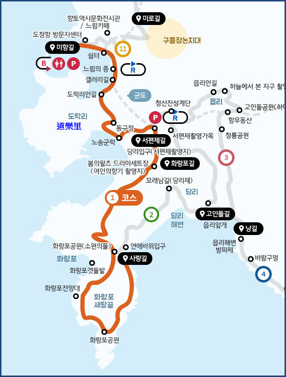
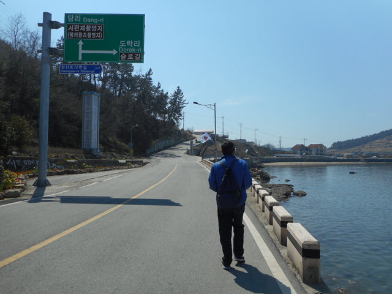
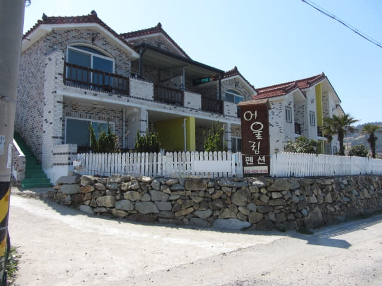

在青山島碼頭附近的「막끌리네식당」海鮮餐廳吃完滋味鮑魚午餐, 時間已經是早上十一時四十分, 可以正式開始我們青山島慢遊之旅。相信正在看見我網誌的一些朋友, 肯定罵我浪費了一個早上, 換了他, 已經把一至兩條 Course 走完, 準備回程! 算了吧! 始終每個人對旅遊的目的不同, 其實只有自己最清楚知道應該選擇去什麼地方, 用什麼方式遊覽。
接著我們會從青山島碼頭出發, 沿1號步行路線慢慢走。青山島碼頭是1號步行路線的起點, 沿標示走便可走完整段路線。按官方的資料, 1號步行路線全長5.71公里, 慢慢步行約九十分鐘便可行畢全程。
青山島1號步行路線 (美港路 – 東口井路 – 西便制路 – 花浪浦路)
青山島1號步行路線分為四段: 美港路、東口井路、西便制路、花浪浦路
路線全長: 5.71km
所需時間 : 90分鐘四段行程的距離及所需時間
미향길
도청항방문자센터 → (220m) → 도청리쉼터 → (300m) → 갤러리 → (150m) → 도락리안길동구정길
도락리안길 → (400m) → 동구청 → (310m) → 도락노송길 → (410m) → 당리입구(서편제촬영지)서편제길
당리입구(서편제 촬영지) → (420m) → 봄의왈츠 드라마세트장화랑포길
봄의왈츠 드라마 세트장 → (1,370m) → 화랑포갯돌밭입구(삼거리) → (2,130m) → 연애바위 입구
Okay! 正式開始我們青山島慢遊之旅的第一個行程 — 1號步行路線遠足。青山島擁有蔚藍的天空、碧綠的大海和青翠的山, 傳說古時是神仙居住的地方, 所以也稱為「神仙島」, 今天就讓我們和神仙一起慢遊吧。
青山島港 (美港路)段
離開碼頭, 沿道清里的青山島港走。今日的天氣真好, 晴天朗朗, 陽光正好, 是郊遊的最佳日子。
在青山島港轉右走, 經過好像是什麼健康部門的大樓 (청산보건지소)。
繼續沿青山島港旁的1號步行路線走。
再向前走一會便返回剛才尋求協助的警察局。
又經過停靠在警察局附近的美食車。

又來到慢行之鐘 (느림의종), 我們當然又是輪流敲打幾下 — 「噹~~~~~~噹~~~~~~~噹~~~~~~~」, 提醒我們要慢行~~~~~要放鬆身心~~~~要細心欣賞沿途風光, 這正是來青山島的最主要目的。
道樂里 (도락리)、堂洛里 (당락리 Dangnak-ri)分叉路
繼續沿青山島港畔走, 迎面是一條分叉路, 兩條路都在堂洛里 (당락리 Dangnak-ri) 匯合, 即是道樂里 (도락리)油菜花田山坡上的觀景台。左邊往上走的陡斜馬路是捷徑, 一些在青山島只逗留幾小時的旅客都會選擇這路線; 右邊沿海岸的道路是往道樂里村莊, 仍然是1號步行路線的其中一段。

沿途都有1號步行路線的標誌, 只要留意, 應該不會迷路的。
我們在道樂里 (도락리)、堂洛里 (당락리 Dangnak-ri)分叉路口循右邊的1號步行路線繼續沿青山島港旁向前走。在主要的分叉路口, 地上、牆上或柱子上都有標誌的。
優美的青山島港, 不時停下來欣賞, 吹吹海風, 無比寫意。
沿途的民宿。

沿青山島港旁向右拐了一個大彎, 回頭望望剛才從碼頭走來的一段路。
道樂里 (도락리)入口
又來到另一個分叉路口, 按標示所示, 在這裡轉左離開青山島港, 進入道樂里村莊, 就這樣輕輕鬆鬆的完成了1 號路線的青山島港段(美港路段)。